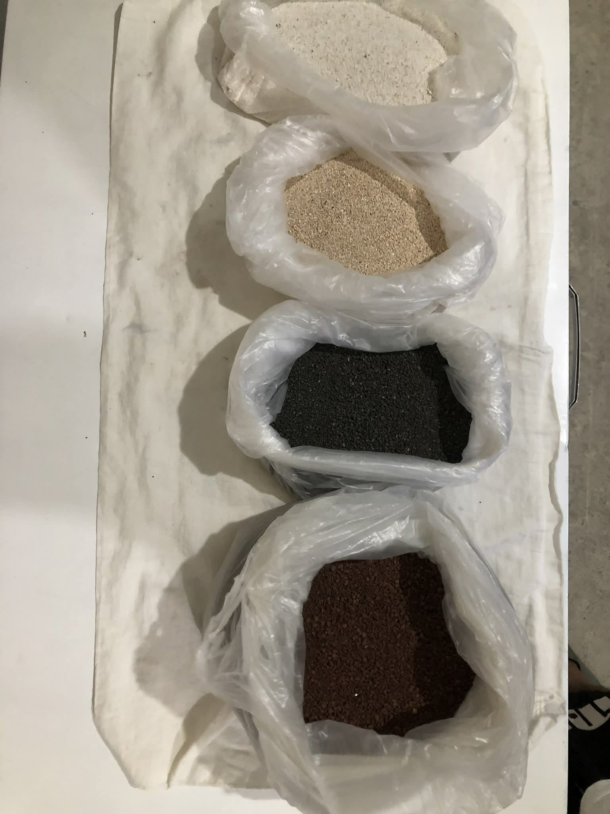

Hard escape are the center piece of the aquarium that make the tank more natural and it can mimic the natural habitat of a fish and can add more aesthetics to the tank instead of just a tank and fish.
- -Dragon Stone
- -Drift Wood
- -Seiryu Stone
- -Slate
- -Limestone

Substrate can also mimic natural habitat of the fish, where you can plant your aquatic plants and create your aquarium more lively and natural.
- -Gravel
- -Lava Rock Sand
- -Black Sand
- -Silica Sand
- -White Sand